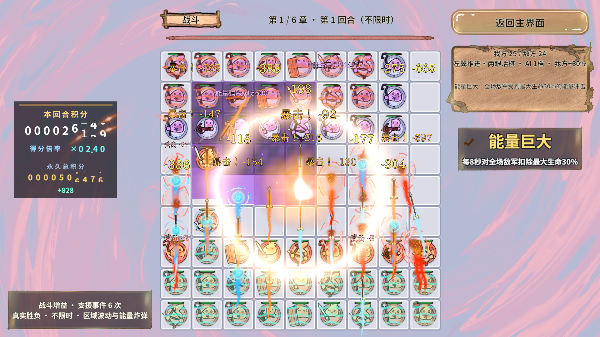
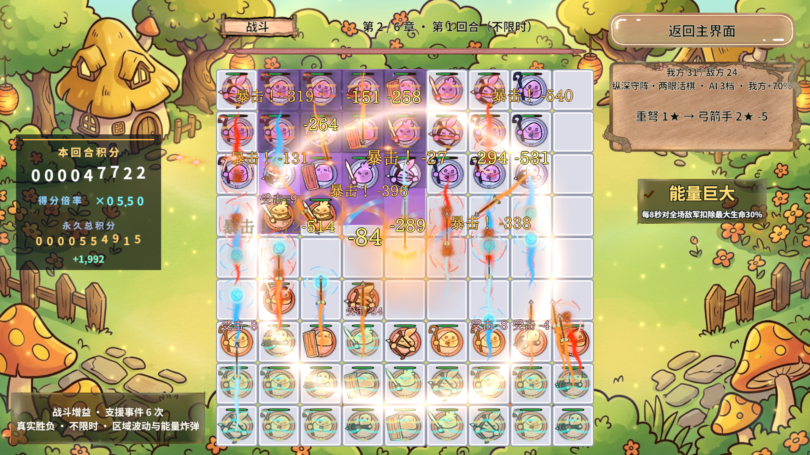
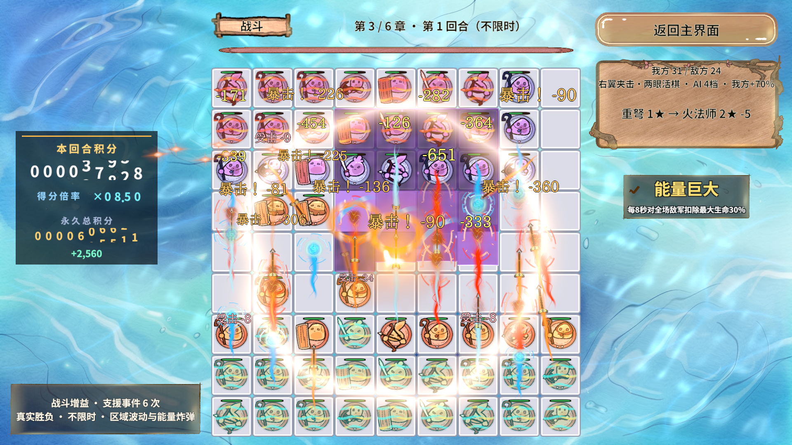
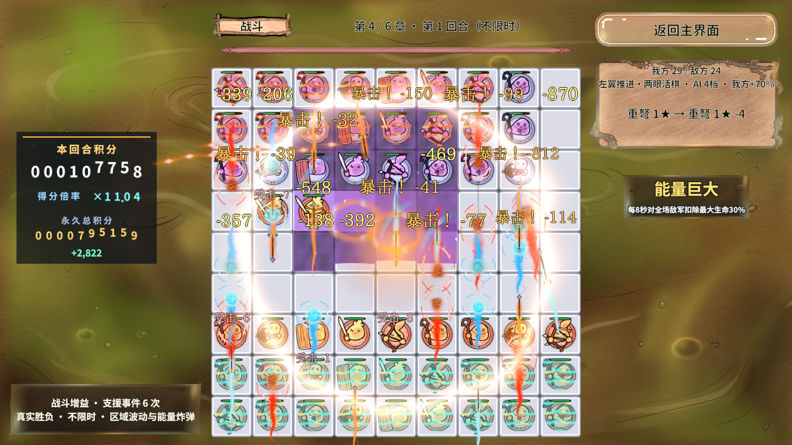
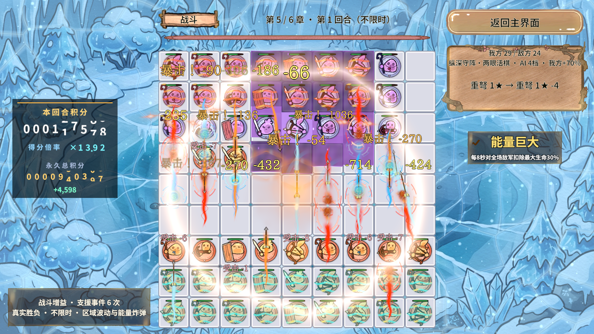
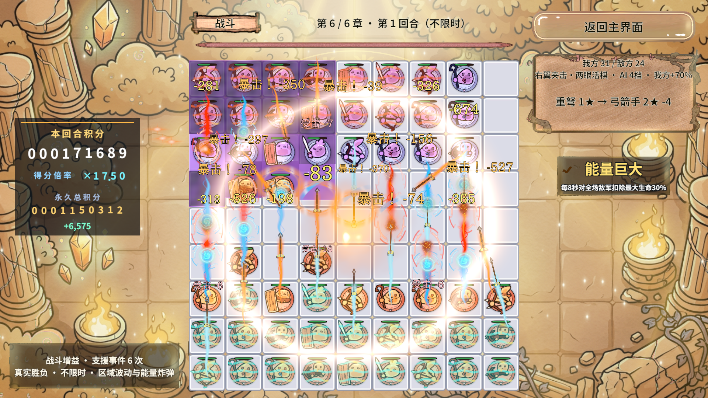
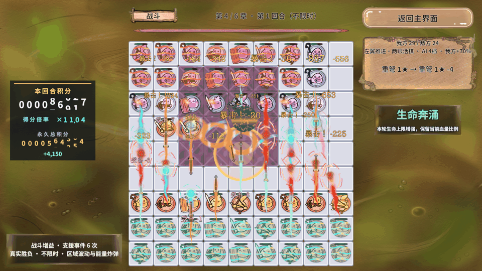

结论：资源泄漏已修复，低端机 80～90 FPS 尚未验收
六章均执行真实 PC AB、48～55 棋持续交战压测，保留远近程攻击、支援、眼位、区域波动、能量炸弹与反馈效果。伤害统一计算与提交、GM集中注册、资源租约修复已落地。返回大厅的加载包数量从基线24个恢复为14个，战斗专用包实际卸载。
环境：Unity 2022.3.15f1c1 / Windows 11 / i7-12700H（20逻辑核）/ 约16GB RAM / Intel Iris Xe 核显（共享内存）/ DX11 / 1920×1080。不是8GB独显。使用桌面编辑器，前后台、Profiler窗口、其它桌面工作与调度噪声未完全隔离；无独立Player或Android真机结果。
六章帧率与卡顿分布
固定种子1025+章号，起始双方各24棋，六种近远程；夹具增大生命并每秒续航，防止负载死亡后变成空场测试。每章准备完成后预热2秒，正常采样12秒。Profiler关闭期间以真实墙钟逐帧采样；之后单独短录Profiler。VSync暂设0、targetFrameRate=-1，finally恢复原值1/-1。CSV记录自身也有开销。
| 章 | 基线FPS | 最终FPS | P50 ms | P95 ms | P99 ms | 存活棋子 | 攻击事件 |
|---|---|---|---|---|---|---|---|
| 1 | 165.3 | 71.2 | 11.69 | 28.78 | 47.37 | 48–53 | 2623 |
| 2 | 155.0 | 99.2 | 8.83 | 17.91 | 30.51 | 50–55 | 2866 |
| 3 | 162.2 | 89.4 | 9.53 | 21.07 | 32.52 | 50–55 | 3230 |
| 4 | 66.4 | 60.9 | 14.71 | 30.11 | 43.51 | 48–53 | 2958 |
| 5 | 70.9 | 69.4 | 12.75 | 26.08 | 46.51 | 48–53 | 2677 |
| 6 | 88.0 | 85.5 | 10.43 | 20.84 | 33.68 | 50–55 | 2918 |
这是持续负载夹具，不是自然关卡通关时间、难度或胜率。稳定90帧要求约11.11ms帧预算，80帧约12.5ms；应看P95/P99，不能只看平均FPS。最终每章都至少40棋、40次攻击，并核对退出回收。基线和中间轮JSON/CSV均在evidence，不选最高帧率做结论。
Profiler：视图和UI成本不可忽略
表内为主线程标记的每帧平均 inclusive 毫秒，父子包含关系不能相加；EditorLoop属于编辑器，不是手机游戏逻辑。Profiler采样与正常FPS采样时间窗不同，二者不能直接相减推算GPU时间。
| 章 | Main | PlayerLoop | EditorLoop | Camera.Render | UGUI批重建 | Board.LateUpdate | DOTween | RevTimer |
|---|---|---|---|---|---|---|---|---|
| 1 | 12.448 | 6.369 | 5.707 | 1.820 | 1.024 | 0.968 | 0.625 | 0.544 |
| 2 | 12.415 | 6.562 | 5.482 | 1.795 | 0.953 | 0.859 | 0.620 | 0.557 |
| 3 | 12.332 | 6.684 | 5.267 | 1.994 | 1.079 | 0.944 | 0.640 | 0.575 |
| 4 | 18.278 | 9.423 | 8.410 | 2.402 | 1.574 | 1.514 | 0.871 | 0.922 |
| 5 | 18.366 | 9.671 | 8.244 | 2.462 | 1.405 | 1.795 | 0.850 | 1.175 |
| 6 | 13.228 | 7.150 | 5.684 | 2.072 | 1.179 | 1.018 | 0.709 | 0.663 |
最终第四章raw共74帧：主线程18.278ms，PlayerLoop9.423ms，EditorLoop8.410ms；渲染线程等待主线程命令6.748ms，Camera.Render提交2.202ms。等待并不是GPU执行时间，也不支持直接增加AI线程。主线程GC.Alloc元数据合计平均17,507字节/帧（包含Editor与工具分配，不是纯玩法分配）；仍需Player分配调用栈定位。线程核查摘要。
多颗棋子的规则已通过同一个固定步驱动（0.3125秒），不为每颗棋子新增Update/协程。高频预算优先投入BoardView的文字避让与反馈排队、DOTween动画、Canvas重建及透明渲染；不能仅凭棋子多就改成线程并行。Unity视图仍在主线程，AI试算保持独立快照与占格版本规则。
- 已保留：同帧同位置/缩放的飘字矩形缓存，避免新文字布局反复查询Renderer.bounds和投影；透明度不变时不重复写5份TextMesh颜色。
- 已保留：积分滚筒未变化的高位不重复写RectTransform。
- 已撤销：积分区子Canvas。第四章同场交替off/on两组，UGUI平均off约2.140ms、on约2.327ms，没有证据支持收益，最终代码不启用。
| HUD诊断段 | UGUI批重建 inclusive |
|---|---|
| 0-canvas-off | 1.5501 ms |
| 1-canvas-on | 2.3524 ms |
| 2-canvas-off | 2.7296 ms |
| 3-canvas-on | 2.3008 ms |
缓存减少重复工作有明确代码路径依据，但当前桌面采样无法建立可靠的总帧率提升比例；不宣称零GC。后续手机优化需先拆分文字布局/播放/回收标记，并分别记录CPU帧、GPU帧、GC分配与功耗。
下载有效Profiler原始录制（.raw压缩包）；在Unity Profiler中Load对应raw查看。Profiler窗口已打开并载入最终第四章raw；窗口操控被用户Esc终止，未附新的窗口截图。
Draw Call、合批与内存
| 章 | Draw Call | SetPass | 动态批 | 实例批 | 分配峰值MB | 保留峰值MB | Mono峰值MB |
|---|---|---|---|---|---|---|---|
| 1 | 64.2 | 52.3 | 30.7 | 0.0 | 613.9 | 1109.1 | 656.2 |
| 2 | 64.4 | 52.7 | 30.2 | 0.0 | 638.0 | 1130.9 | 667.8 |
| 3 | 64.8 | 53.0 | 30.3 | 0.0 | 632.6 | 1121.9 | 679.8 |
| 4 | 64.4 | 52.7 | 30.8 | 0.0 | 643.9 | 1126.9 | 684.9 |
| 5 | 65.4 | 53.6 | 30.4 | 0.0 | 600.3 | 1081.9 | 685.1 |
| 6 | 64.3 | 52.7 | 30.2 | 0.0 | 602.7 | 1079.9 | 685.9 |
动态合批有实际计数；GPU实例化批次为0。不能把Shader含instancing关键字当成实例化生效。共享材质和图集已沿用，透明排序、不同材质/Shader、字体与UI层次仍限制合批。Draw Call不随本轮优化显著下降；不能据此推断GPU廉价，覆盖面积、片元复杂度和透明叠加仍可能昂贵。
内存是Unity Editor进程相关Profiler计数，包含编辑器、资源、采样等，不能当手机常驻内存。各列分别取峰值、统计域不同，不应相加；Mono值也不能从总分配列直接相减。本轮验证的是资源引用/包生命周期回归，不是已证明所有内存泄漏消失。
Frame Debugger独立暂停帧导出46个事件，包含透明几何和UGUI覆盖层；这是事件层级清单，不等于持续负载的Draw Call。查看事件证据。工具没有返回逐事件材质/纹理和拆批原因，不能声称已逐材质诊断。
GPU精确耗时未形成有效证据，FrameTiming/GPU模块不可用或为0时记为缺失，不把CPU提交耗时称为GPU时间。透明过绘需在目标移动GPU上用Frame Debugger及GPU工具继续测量。
AB按需加载与实际卸载
| 阶段 | 原基线 | 最终实现 |
|---|---|---|
| 首页 | 14 | 14 |
| 六章战斗末 | 24 | 24 |
| 返回大厅 | 24 | 14 |
两条泄漏链已修复：①冷加载池请求原来未归还临时引用，进出次数越多引用越高；GamePoolRequests只组合RevResManager与RevPool公开门面，缓存命中直接取池，冷加载交付后归还临时引用。②RevScene清空闲实例不会销毁池本身；退出战斗且视图已归还后，显式DestroyGroup(Battle)，再FlushUnused卸零引用包。战斗面板使用DestroyOnClose。全程不force卸仍被引用的共享包。
章节背景新图接管后释放旧租约，等待销毁落地，在交接点清理闲置包；不逐帧执行UnloadUnusedAssets。返回大厅14个包中含空名称的Unity内部包，以及菜单/字体/数据/共享材质和被菜单真实依赖的图集。它们不是战斗独占残留；不能为追求包数为0破坏首页。
最终返回时的实际包名
atlas_boardstatus atlas_pieceframes atlas_uibattle atlas_uimenus material_background config_piece_art ui_loading data_tables shared_shaders material_cards ui_panels font_cjk material_ui
伤害统一出口与GM单文件注册
DamageRequest → EvaluateDamage（纯计算）→ ResolveDamage（唯一提交）。普攻、Boss技能、最大/当前生命比例与固定伤害均走同一最终减伤、护盾、扣血、眼位复活、计分和死亡链。AI斩杀预测复用纯计算，不消费暴击随机数、不扣盾、不派发事件；能眼位复活的棋子不误判成永久击杀。Boss技能仍保留原独立倍率语义，没有借重构增加难度。
GameGmCommands.cs是全部RevGame GM的唯一注册文件；Bootstrap只调用RegisterAll/UnregisterAll；运行时实查63条命令。实际注册账本保证重复注册幂等、异常回滚与完整注销，包括旧Boss命令。新增玩家操作复用正式业务或GamePointerInput链，保留遮挡、禁用与阶段限制。诊断造局和玩家操作有明确标识。
| 玩家操作 | GM入口 |
|---|---|
| 首页/选关/进入/返回 | 打开选关、进入战斗、返回主界面、返回选关首页 |
| 选牌/落子/换位 | 选牌、落子、点格子、点棋盘 |
| 眼石/刷新/开战 | 选择眼石、刷新手牌、开始战斗 |
| 射程长按/收起 | 攻击范围、收起攻击范围 |
| 结算/奖励/跳过 | 下一回合、选奖励、跳过 |
| 故障返回/PvP/退出 | 故障返回、玩家对战、退出游戏 |
| 可观察状态 | 玩家操作目录、流程状态、战斗状态、手牌、落点、奖励、棋子 |
PvP按当前真实按钮行为显示未开放提示，不虚构在线对战。退出游戏会终止Play/Player，未为覆盖率主动结束用户会话。截图GM改为可传证据目录，默认系统临时目录，不再拼Application.dataPath。命令名静态清单（另附63条运行时完整目录）。
验证、失败记录与边界
| 检查 | 结果与范围 |
|---|---|
| 规则与战术 | 741条真实业务 + 745条战术断言通过；伤害专项49条包含其中 |
| 眼位专项 | 177条通过；已有中心棋后补成眼、破眼撤销等 |
| 积分规则 | 1149条通过 |
| 真实PC AB | 冷启动三次往返5087条、最终再次往返3711条采样断言通过（逐帧断言条数随采样帧数变化）；GM注册/注销/恢复、手牌/图集非白图、准备增益与资源回收 |
| 积分/视觉/回收 | 222条Play断言通过；滚筒数字有实际网格、伤害/积分一致、回收 |
| 六章压力 | 六章固定负载、实际攻击、CSV/PNG；最终14包且战斗专用包不残留 |
| 未测 | Android低端机、发布Player、GPU精确耗时、热降频长跑、手机80/90Hz显示能力 |
失败均保留边界：旧连击累计出现1.9999999导致整数截断少打一次，统一用1e-6算法容差取完整次数，玩家/敌兵/Boss共用；旧准备验收用固定3250ms墙钟猜模拟完成，改为有界观察实际PreparationElapsed/Granted，冻结仍会超时失败；某次Profiler第四章只有4字节空raw，未计作有效CPU证据，新增有界补采及有效帧断言。早期Profiler UI事件录制触发Unity原生崩溃，重启后关闭UI/UIDetails保留CPU/Rendering/Memory；仅附脱敏尾部，完整启动日志不交付。
下一步真机验收：选实际低端80/90Hz设备；Development Player与发布包分别跑六章相同夹具，每章至少60秒，连续10分钟热稳定后复测；目标80fps看P95≤12.5ms，90fps看P95≤11.11ms，并记录P99、温度、降频、CPU/GPU时间、GC bytes/frame与资源往返。若GPU超预算，再按实测配置背景片元复杂度与透明层级；若CPU超预算，优先切分文字布局/动画/Canvas热点，不能破坏同帧致死、补子、换位气眼刷新。
真实画面与动态图
截图为各章采样结束时实际画面；动图来自第四章HUD诊断同场交战。图片证明表现存在，数值通过与否以断言、CSV和Profiler原始录制为准。












